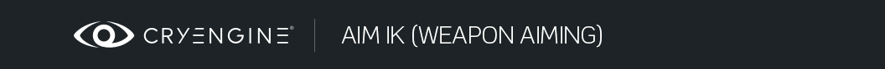
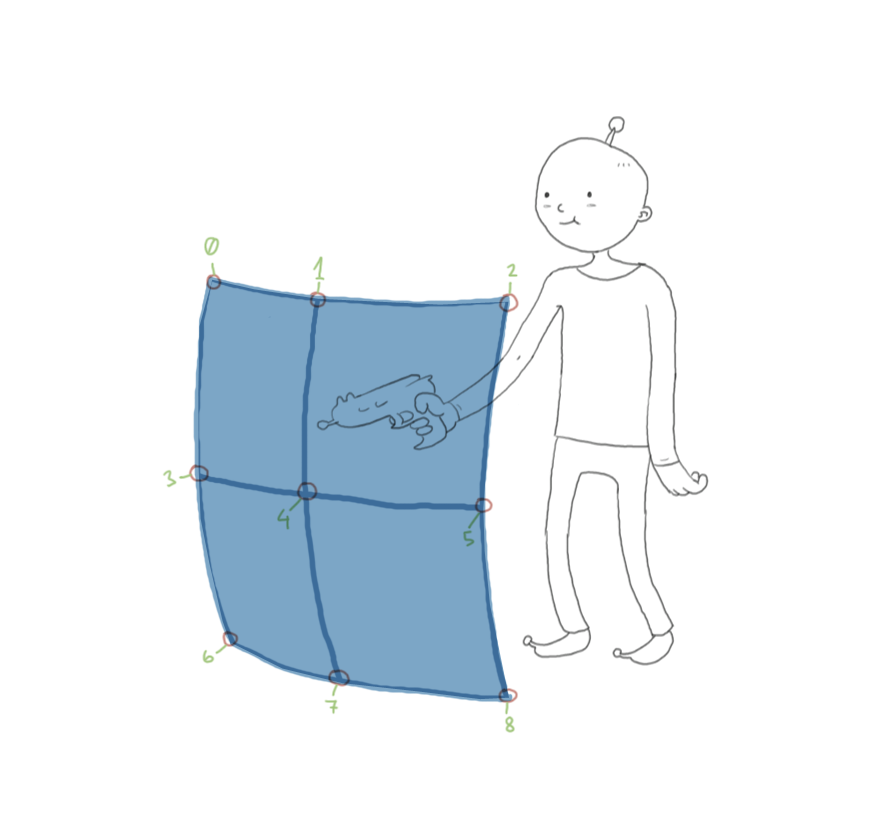
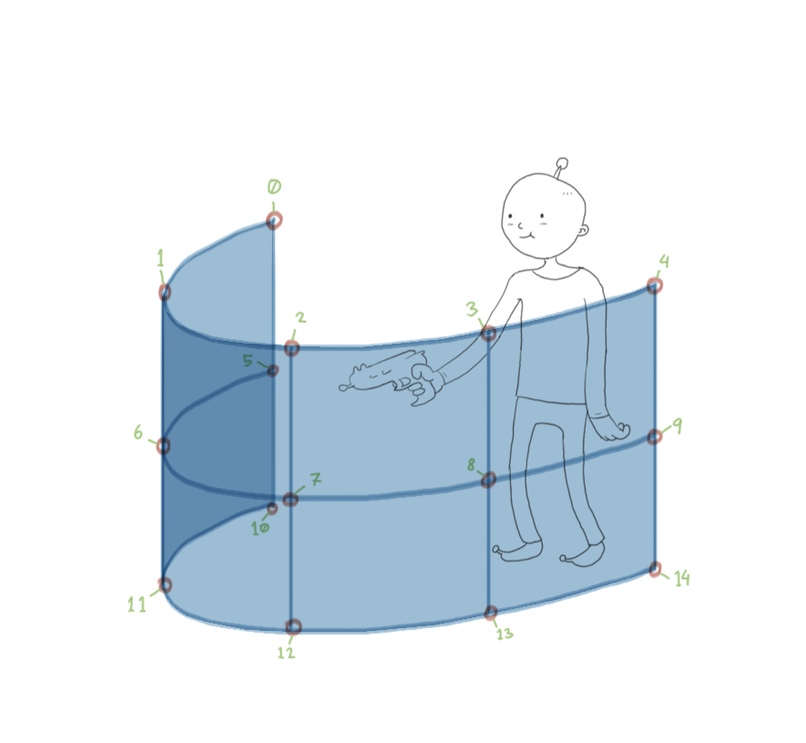
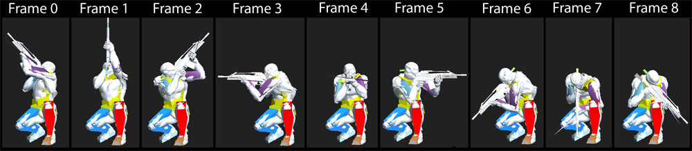

Обзор
Целиться персонажем или смотреть в сторону точки в трехмерном мире — обычная функция, необходимая во многих играх.
В некоторых простых случаях этого можно добиться, вручную манипулируя некоторыми конкретными суставами персонажа. Например, простая система взгляда на голову может просто захватить сустав головы и изменить его ориентацию после обработки всей анимации, чтобы указать в определенном направлении.
В более сложных сценариях добиться этого может быть гораздо сложнее. Например, прицеливание из оружия может потребовать, чтобы оружие было направлено в определенное место, руки персонажа крепко держали оружие, и персонаж все время смотрел в прицел. Во многих случаях мы хотим добавить немного изюминки или стиля, когда персонаж прицеливается. Обычно мы также хотим сохранить как можно больше стиля в анимации, воспроизводимой под ней, чтобы она выглядела как можно более естественно. Это требует немного больше усилий, чем простое вращение одного сустава.
Для более сложных случаев взгляда и прицеливания CRYENGINE предоставляет параметрическую систему направленного смешивания, которая позволяет аниматорам или техническим художникам создавать набор образцов поз персонажей, смотрящих и целящихся в разных направлениях. Во время выполнения мы смешиваем эти позы и помещаем их поверх воспроизводимой в данный момент анимации, чтобы персонаж смотрел или направлялся в точку в пространстве, запрошенную игровым кодом, сохраняя при этом стиль, присутствующий в исходных авторских позах, насколько это возможно.
Наша текущая реализация разработана с использованием персонажей, которые демонстрируют диапазон движений, аналогичный человеческим персонажам (например, она не поддерживает непрерывное прицеливание на 360 градусов вокруг точки поворота, как вращается механическая турель).
Главы:

Настройка цели IK
Настройка файла анимации
Система требует нескольких поз нашего персонажа, целящегося в нескольких направлениях, чтобы он мог смешиваться между ними и целиться в любом промежуточном направлении. Он работает ровно с 9 или 15 позами.
Позы экспортируются в виде файла анимации, по одной позе на кадр. Имя этого файла важно. Некоторая часть его имени должна соответствовать AnimToken, указанному в определении.
Порядок поз в анимации также важен.

Как это могло бы выглядеть в случае с 9 позами:

Хотя во многих случаях 9 поз может быть достаточно, для лучших визуальных результатов рекомендуется использовать 15 поз, поскольку при предоставлении 9 поз система в настоящее время экстраполирует предоставленные для создания 15 поз.
При создании поз прицеливания или взгляда в качестве отправной точки обычно используется базовая анимационная поза (например, стояние без дела). Прицелы, созданные на основе такой начальной анимации, должны применяться поверх аналогичных анимаций.
Если базовая анимация, воспроизводимая в данный момент для персонажа, достаточно отличается (например, приседание), возможно, потребуется создать прицелы для этого конкретного случая, чтобы добиться лучшего качества.
Анимация AimPose или LookPose в файлах DBA не поддерживается.
ChrParams Настройка файла
Основная конфигурация, позволяющая персонажу использовать позы прицеливания и взгляда, указана в файле chrparams его скелета.
Важно, чтобы это был скелет, используемый RC для обработки анимации, поскольку прицелы обрабатываются RC.
AimIK
Конкретная структура файла chrparams выглядит следующим образом:
<Params>
<IK_Definition>
<AimIK_Definition>
<DirectionalBlends>
<Joint AnimToken="AimPoses" ParameterJoint="Bip01 CustomAim" StartJoint="Bip01 CustomAimStart" ReferenceJoint="Bip01 Pelvis"/>
</DirectionalBlends>
<RotationList>
<Rotation Additive="1" Primary="1" JointName="Bip01 Pelvis"/>
<Rotation Additive="1" Primary="1" JointName="Bip01 Spine"/>
<Rotation Additive="1" Primary="1" JointName="Bip01 Spine1"/>
<Rotation Additive="1" Primary="1" JointName="Bip01 Spine2" />
<Rotation Additive="0" Primary="1" JointName="Bip01 CustomAim" />
<Rotation Additive="0" Primary="1" JointName="Bip01 CustomAimStart" />
<Rotation Additive="0" Primary="0" JointName="Bip01 LHand2Aim_IKTarget" />
<Rotation Additive="0" Primary="0" JointName="Bip01 LHand2Aim_IKBlend" />
...
<Rotation Additive="0" Primary="0" JointName="Bip01 RHand2Weapon_IKBlend" />
</RotationList>
<PositionList>
<Position Additive="1" JointName="Bip01 Pelvis"/>
<Position Additive="0" JointName="Bip01 CustomAim" />
...
<Position Additive="0" JointName="Bip01 RHand2Weapon_IKBlend"/>
</PositionList>
</AimIK_Definition>
</IK_Definition>
...
<Params>DirectionalBlends
DirectionalBlends определяет комбинацию параметров, начальных и опорных суставов, которые будут использоваться для прицеливания. Анимация обрабатывается как прицельная поза с этой конкретной конфигурацией, когда AnimToken встречается где-то в ее имени (в этом примере любая анимация, обработанная для этого скелета, содержащая подстроку "AimPoses" в любом месте своего пути, будет считаться прицеливаемой с "Bip01 CustomAim" в качестве параметра сустава, "Bip01 CustomAimStart" в качестве начального сустава и "Bip01 Pelvis" в качестве опорного сустава).
| AnimToken | Подстрока, которая должна быть сопоставлена с некоторой частью имени анимации, чтобы ее можно было обработать как цель с текущей конфигурацией параметров, начальных и ссылочных соединений. |
|---|---|
| ParameterJoint | Имя параметра соединения. |
| StartJoint | Название стартового сустава. |
| ReferenceJoint | Имя эталонного соединения. |
Можно указать более одного раздела DirectionalBlends.
RotationList
Этот список используется кодом времени выполнения, чтобы узнать суставы, которые влияют на их ориентацию на цели. Любое соединение, не указанное в этом списке, будет игнорироваться в целях расчета и смешивания целевой позиции.
| JointName | Название сустава |
|---|---|
| Добавка | Определяет режим наложения. 1 -> Аддитивное смешивание 0 -> Изменить смешивание |
| Первичный | Указывает, является ли он частью иерархической цепочки, идущей от корневого соединения до соединения параметров. |
Основные соединения должны быть указаны в начале списка ротации.
В настоящее время необходимо, чтобы все первичные суставы появлялись раньше всех их дочерних элементов, которые также помечены как первичные.
У AimPoses может быть только один список вращения, поэтому в нем должны появиться все суставы, используемые всеми прицелами, и он должен быть действительным для всех из них.
PositionList
Этот список используется кодом времени выполнения, чтобы узнать суставы, которые своим положением влияют на прицеливание. Любое соединение, не указанное в этом списке, будет игнорироваться в целях расчета и смешивания целевой позиции.
| JointName | Название сустава |
|---|---|
| Добавка | Определяет режим наложения. 1 -> Аддитивное смешивание 0 -> Изменить смешивание |
У AimPoses может быть только один список позиций, поэтому в нем должны появиться все суставы, используемые всеми аимпозами.
Распространенные ловушки
Позы прицеливания и взгляда обрабатываются компилятором ресурсов (RC) как часть этапа обработки папки анимации. В результате этого процесса RC записывает файл DirectionalBlends.img.
DirectionalBlends.img содержит для всех поз прицеливания и взгляда, найденных во время обработки, информацию, необходимую среде выполнения, чтобы выяснить, как каждую из поз необходимо смешать вместе, чтобы персонажи смотрели или целились точно в запрошенных направлениях. Эта информация рассчитывается на основе данных позы, найденных в файле CAF, и определений AimIK и LookIK в файле chrparams.
По умолчанию при запуске Sandbox или игры система анимации просто загружает эту предварительно обработанную информацию из файла DirectionalBlends.img вместо того, чтобы пересчитывать ее для каждой загружаемой позы прицеливания или взгляда, поскольку это значительно сокращает время загрузки.
При работе с файлами Aim или Look Pose CAF или редактировании определения AimIK или LookIK в файле chrparams мы обычно не хотим воссоздавать этот файл, поскольку для этого требуется, чтобы у нас были все исходные файлы анимации локально, и обычно RC требуется некоторое время для обработки всей папки анимаций (создание DirectionalBlends.img - это не единственное, что он делает). В таких случаях лучше всего отключить загрузку DirectionalBlends.img и заставить движок пересчитывать необходимую информацию во время загрузки, чтобы локальные изменения можно было правильно уловить.
Чтобы сообщить движку, что мы не хотим загружать файл DirectionalBlends.img, мы должны установите переменную "ca_useIMG_AIM" на 0 перед запуском Sandbox или игры (например, в файле user.cfg). Теперь при загрузке позы прицеливания или взгляда информация, которая раньше была в DirectionalBlends.img, будет пересчитываться.